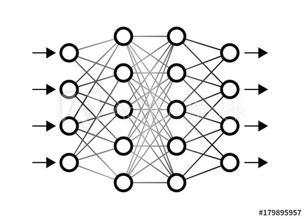

<!DOCTYPE html> 
<html>
    <link rel="stylesheet" href="styles.css">
    <head>
        <header>
            <nav>
                <ul>
                    <li><a href="index.html">Home</a></li>
                    <li><a href="about.html">About</a></li>
                    <!-- <li><a href="projects.html">Projects</a></li> -->
                    <li><a href="skills.html">Skills</a></li>
                    <li><a href="mailto:ollieellis1@outlook.com">Contact</a></li>
                    <li><a href="CV.pdf" download>CV</a></li>
                </ul>
            </nav>
        </header>
    </head>
    <!-- <section me_photo>
        <figure>
            
            <figcaption></figcaption>
        </figure>
    </section> -->
    <section class="projects">
        <!--   You'll notice the img urls are LONG, I had to upload them to google drive   -->
        <figure>
            
            <figcaption>Developed a library from scratch (excluding NumPy) for implementation and training of neural networks (Graded 100%) </figcaption>
        </figure>
        <figure>
            
            <figcaption>Monte Carlo Simulation (personal project) and Analysis (graded 60%) of CPU Cores’ Interaction with Ticket Spinlocks </figcaption>
        </figure>
        <figure>
            
            <figcaption>• Deep Learning Paper on Network Training, Common CNN architectures, RNN, Autoencoders, VAE-GANS and RL (Graded > 70%) </figcaption>
        </figure>
    </section>
    <section class="projects">
        <!--   You'll notice the img urls are LONG, I had to upload them to google drive   -->
        <figure>
            
            <figcaption> Image Classification on MNSIST Fashion using PyTorch, test set accuracy 95.95% (better than 5th place on Kaggle) (Graded 95%) </figcaption>
        </figure>
        <figure>
            
            <figcaption> Decision Tree Classification of phone location using signal strength received from 8 Wi-Fi routers around a house (Graded 69%)
            </figcaption>
        </figure>
        <figure>
            
            <figcaption> Image Filtering: Created multiple filter kernels using NumPy and Convolved on Images using SciPy and TensorFlow (Graded 91%)
            </figcaption>
        </figure>
    </section>
    <footer>
        <ul>
            Oliver Babington Ellis
        </ul>
    </footer>
</html>